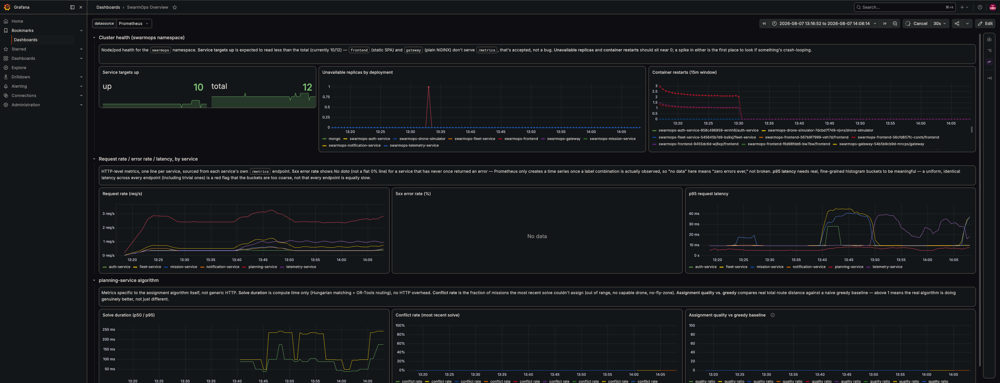

Finished: canary promoted, the old revision at zero
MONITORING
Know before anyone complains
Every service exports metrics. When something drifts, the system raises the alarm itself.

Grafana · Prometheus · Loki · the SwarmOps overview dashboard
MONITORING
Not just alive. Measured.
Requests, failures, and how long it takes to compute a flight plan.
Service targets up, right now
Container restarts, settling to zero
Plan solve time, p50 / p95
RESILIENCE
It breaks. It heals. Nobody gets paged.
Spot node reclaimedAWS takes a node back
→
Kubernetes reschedulespods land on the remaining nodes
→
Full capacity~2 minutes · no human
Canary metrics failnew version underperforms
→
Rollout reverses itselftraffic returns to the stable version
→
Old version servingautomatic · no 3am rollback
Manual change on a serverunauthorized drift
→
Argo CD detects driftcompares cluster to git
→
Git state restored~3 minutes · self-reverting
SECURITY
Secured like a base — outside in
PERIMETERone public door, everything else private
IDENTITYleast privilege, per service
SECRETSshort-lived, issued at runtime
GITthe standing order — drift is reverted
NEXT Closed military networks. The doctrine holds; only the perimeter moves.
SECURITY
One command, five checks
Operatorsends a command
→ TLS
Route 53DNS
→
Load balancerthe only public door
→
gatewaycheckpoint · token check
✗ no valid token→
Rejected at the door · 401 · never reaches a service
✓ valid token→
PRIVATE VPC
serviceleast-privilege role
→
RabbitMQqueued, never direct
→
planningdecides & assigns
→
droneexecutes
SwarmOps.In one slide.
One operator, a whole fleetPlans in secondsReplanning in flight6 microservicesEKS on AWSPrivate VPC · 2 zones5 spot nodes62 containersDeployed by a botBlue-green + canarySelf-healingZero-trust networkAutomatic rollbackMetrics on everything$43 total spend